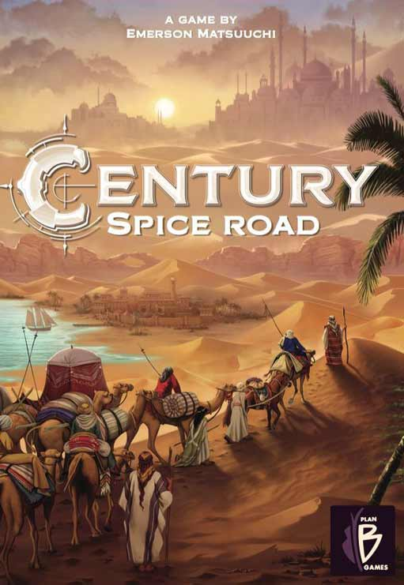
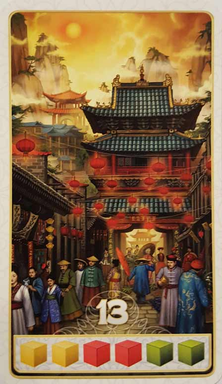
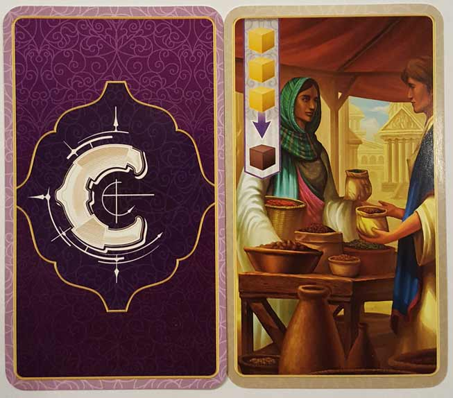
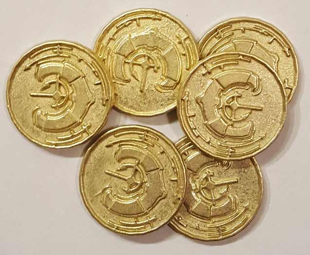
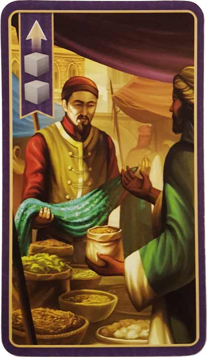
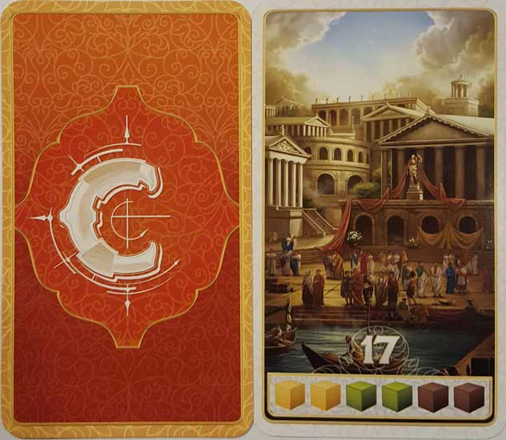
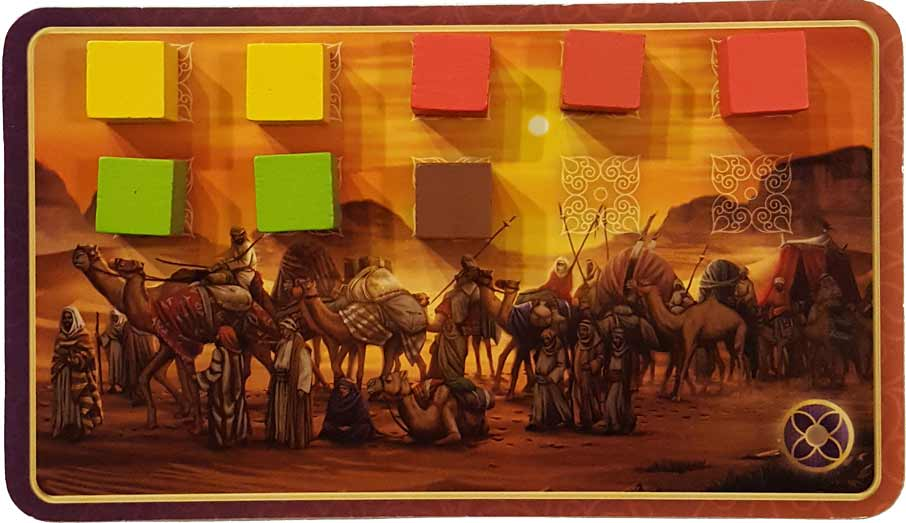

In this Century: Spice Road review, we break down the spice trade-themed card game from Emerson Matsuuchi and Plan B Games. Making their way down the Silk Road, players compete in the collecting of sought after spices, such as saffron and cinnamon. Once the proper spices are gathered, they can be traded for Point cards, and once a player gathers six Point cards (five in a 4-5 player game), the game ends. Want to know more? Continue on to our review below.

D reviews Century: Spice Road
 (Author’s
note: this review is meant to accompany our gameplay video and will not
go in-depth on the game’s rules. If you’re interested in learning how
the game is played, please watch the video. It’s not bad.)
(Author’s
note: this review is meant to accompany our gameplay video and will not
go in-depth on the game’s rules. If you’re interested in learning how
the game is played, please watch the video. It’s not bad.)
Century: Spice Road has a glaring and somewhat curious flaw: its use of theme. Or to put it more accurately, the way that it doesn’t use its theme. For all intents and purposes, the spice trade theme is just a convenient veneer for a really clever and well-designed set of mechanics. It’s not difficult to be impressed by how nicely balanced the game is as you’re playing it, but upon reflection, I honestly wish they would have sacrificed a bit of that balance in favor of incorporating the theme more prominently.
For example, for a game based so heavily around trading, it seems like a missed opportunity to limit player interaction to a point where it’s practically non-existent. Restricting all trading to the cards you collect keeps things fair, but having rules in place to allow trading between players would, in my estimation, make the game a whole lot more fun. Furthermore, the game’s scoring system and win condition, while they are fair and add some tension in the end, really don’t make much thematic sense. You’re trading in your spice for riches, but what’s the significance of acquiring five or six cards when they come in different values? I can appreciate the logic of hiding one’s wealth, but it would make more sense if the goal of the game was to reach a certain point total, rather than some arbitrary numbers of cards to keep the playtime in check. It always feels like you’re just manipulating numbers, rather than playing as a spice trader.
Remarkably, Century: Spice Road mostly succeeds despite this issue, because it does that number manipulation so well. You could put just about any theme on this thing and it would still be fun to play because, mechanically speaking, everything works. That’s not to say that it’s perfect or that I wouldn’t prefer the ideas that I suggested prior to this, but strictly in terms of what is in place, there isn’t much to critique. The game provides a good degree of tension from the very beginning, which steadily ramps up as you get deeper into it. Resting, while always helpful, is a damn hard choice to make when you know that it gives your opponents an extra turn, which may be the difference between you or them getting that card you want. The game also seems to reward multiple play styles. In our most recent game (Video Spoilers), I played somewhat conservatively, favoring the accumulation of numerous, cheaper trade cards, while my opponents spent big on a smaller number of production cards. I ended up winning, but a bit of luck going my opponents’ ways could have easily swung things in one of their favors.
And for all of my criticisms of how Century: Spice Road doesn’t incorporate its theme into its gameplay well, it does do well in incorporating its theme into its art and components. Artist Chris Quilliams definitely did a good job of capturing the feeling of ancient Mediterranean/Arabian/Persian civilization, and the oversized cards on which the art is printed are of a high quality. Also, I always love it when a game uses real metal for its coins, and this is no exception. The gold and silver coins do a good job of actually making you feel like you’re acquiring different levels of wealth. The wooden cubes are nothing remarkable, but they’re preferable to cardboard tokens. And I do really like the inclusion of the cups to store them in, rather than just maintaining piles strewn on the table. The only criticism I have of the packaging is that the plastic insert is slightly too small to fit all of the components in without a great deal of manipulation, which is something that could have easily been avoided.
At the start of this review, I described Century: Spice Road’s major flaw as being “curious”. I used this word because of the fact that this game is just the first part of a series of related games designed by Emerson Matsuuchi. Century: Eastern Wonders is coming out soon and advances the timeline to the era when merchants were taking to the high seas and trying to establish trade with the Far East. While the new game can be combined with Spice Road, it ultimately seems to have unique mechanics of its own, while still continuing the spice trade theme. I’m most interested to see if the sequel does a better job at incorporating this theme into the gameplay, or if Matsuuchi has somehow simply come up with a series of games that just so happen to work well with a shared theme. Regardless of how that game turns out and of my issues with this game, I’m going to recommend Century: Spice Road. It certainly isn’t flawless, but it’s still a very satisfying and well-designed game that I look forward to playing again and again.
D’s Rating: Four Stars out of Five.
Will reviews Century: Spice Road
 In
many ways, spice trading is the perfect theme for a board game,
especially a heavier, Euro-style one. When I first read about Century: Spice Road,
that’s the kind of game I thought it would be. Instead, it’s actually a
fairly light card drafting, deck building game with a hint of Eurogame
thrown in. The game is as simple as building up a deck of cards that
allows you to acquire, upgrade, and trade spices in order to obtain
Point Cards, the main source of victory points. While it may not sound
exciting, Century: Spice Road’s gameplay produces plenty of tension and entertainment, which is mainly due to its refined and balanced mechanics.
In
many ways, spice trading is the perfect theme for a board game,
especially a heavier, Euro-style one. When I first read about Century: Spice Road,
that’s the kind of game I thought it would be. Instead, it’s actually a
fairly light card drafting, deck building game with a hint of Eurogame
thrown in. The game is as simple as building up a deck of cards that
allows you to acquire, upgrade, and trade spices in order to obtain
Point Cards, the main source of victory points. While it may not sound
exciting, Century: Spice Road’s gameplay produces plenty of tension and entertainment, which is mainly due to its refined and balanced mechanics.
From a component standpoint, there’s not much to be impressed by in regards to this game. The card stock used for the Merchant and Point cards is of a high quality, but that’s not enough to make Century: Spice Road stand out. The wooden cubes that represent the spices are colorful, but they’re also just painted wood. Sure, the game comes with a number of metal “gold” and “silver” coins, but they aren’t actually handled that much during gameplay. For that reason, they actually feel tacked on and completely unnecessary; cardboard coins would’ve sufficed. Metal coins are no long the “hook” component that they used to be, at least for me. Also, I feel the need to point out that the box for Century: Spice Road can never be fully closed, which is due to the overly tall plastic inserts included with the game. I understand this is a personal nitpick, but it bothered me enough that I think it’s likely it’ll bother other people too.
While the components are mediocre at best, they honestly don’t matter that much if the gameplay is worthwhile. Luckily for us, Century: Spice Road’s gameplay is more than worthwhile, it’s borderline addictive. To start, I really like the simplicity of the turns and actions in this game. Instead of there being some complicated turn order, you just have to remember the few actions available to you. One of the actions is to play a card, which is as simple as laying it down and executing its action, such as trading spices or even upgrading them.
Acquiring cards is another possible action, though this one is a bit more complicated. There’s always a row of Merchant cards on the table from which to choose, and the leftmost card is free. However, each card to the right of that card costs spices, so in order to claim a card that’s fourth from the left for example, you’ll need to place a single spice cube on the three cards to the left of it. This is one example of Century: Spice Road’s system of checks and balances. After all, if all the cards were free, it would allow the next player up to always claim the best card. This way, that’s not possible, unless that player is willing to spend an exorbitant amount of spices. In theory, it might make the most sense to take the free card, but it also might not always be the one you want or need. Trying to figure out how much spice you’re willing to give up for a specific merchant can be painstaking, but it’s all part of this game’s satisfying strategies.
At first, I was worried that once I played a Merchant card, I’d lose it for the rest of the game. The third action available to the players makes it so that that’s not the case. I’m talking about the Rest action, which allows you to take back any cards you’ve previously played. Choosing when to rest is pretty stressful, especially toward the end of a session, when sacrificing a turn to reclaim your played cards can be the difference between getting the Point Card you need or losing it to an opponent. This is just another example of Emerson Matsuuchi’s clever design.
Lastly, players can use their turn to claim a Point card. In order to do this, you take the spices from your Caravan that you’ve collected and trade them for the corresponding Point card. These cards are laid out in a row above the Merchant cards, and the leftmost one (similar to the Merchants) features an extra bonus, a gold coin. Each gold coin is worth three extra victory points at the end of the game. Also, silver coins are placed above the second Point card from the left, so if you claim that card, you can take a silver coin that’s worth one victory point at the end. I really appreciate the purpose of these coins: they force you consider lesser Point cards when you otherwise wouldn’t (again, checks and balances). This is another example of a design choice that’s simultaneously easy to understand and hugely important to the gameplay’s balance.
While I really do adore many of the design choices, I wasn’t in love with everything. For instance, a session of Century: Spice Road ends when a player collects six Point cards (five in a 4-5 player game). I understand that there may not have been a better way to trigger the endgame, but the “first player to reach this milestone” method is never the most ideal. In a way, this endgame condition could definitely create a runaway leader problem. I could easily see a player spoiling everyone’s fun by collecting the cheapest cards and sprinting towards the finish line, leaving everyone else behind. Additionally, I wasn’t a fan of the fact that this game features virtually no player interaction. In fact, it’s not uncommon to have long stretches where players barely speak to one another, except for when someone needs some cubes or a card that’s out of reach. This is where I noticed some of the Eurogame inspirations kicking in. Then again, the gameplay here is light enough that more sociable groups should be able to converse over the proceedings.
All in all, I definitely enjoyed my time with Century: Spice Road. The gameplay is light, intuitive, and a joy to play. Nothing is particularly unfair, which speaks to the high level of design present here. I could understand how someone might find this game to be too simple, but I’d remind that person that Spice Road is only the first game in a trilogy, and that each successive game will add to the previous one. In other words, the simplicity was intentional and necessary. Personally, I cannot wait for the next installment, Century: Eastern Wonders, which is expected to release in June 2018.
I give Century: Spice Road a: B
Century: Spice Road Review – Board Crazy’s Ratings
Leave a Reply
You must be logged in to post a comment.